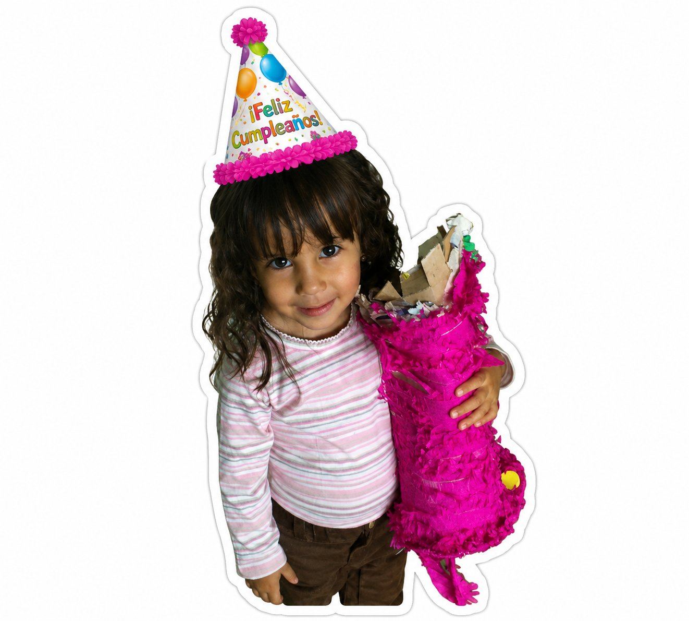
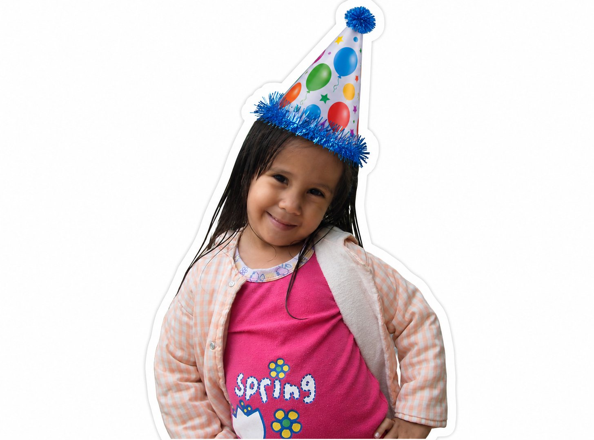
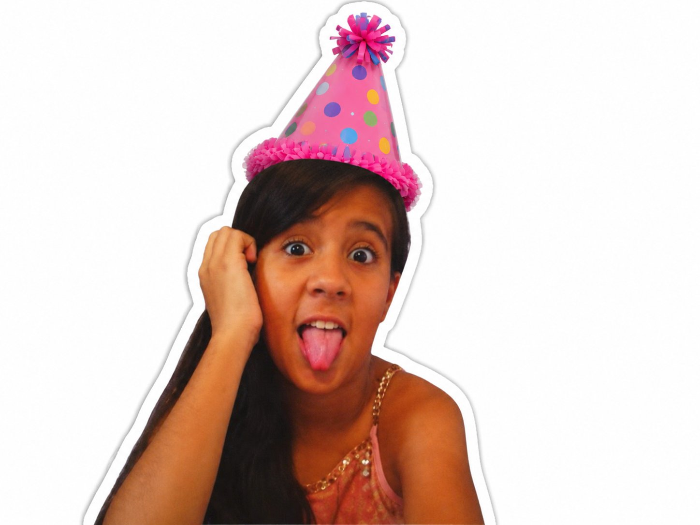
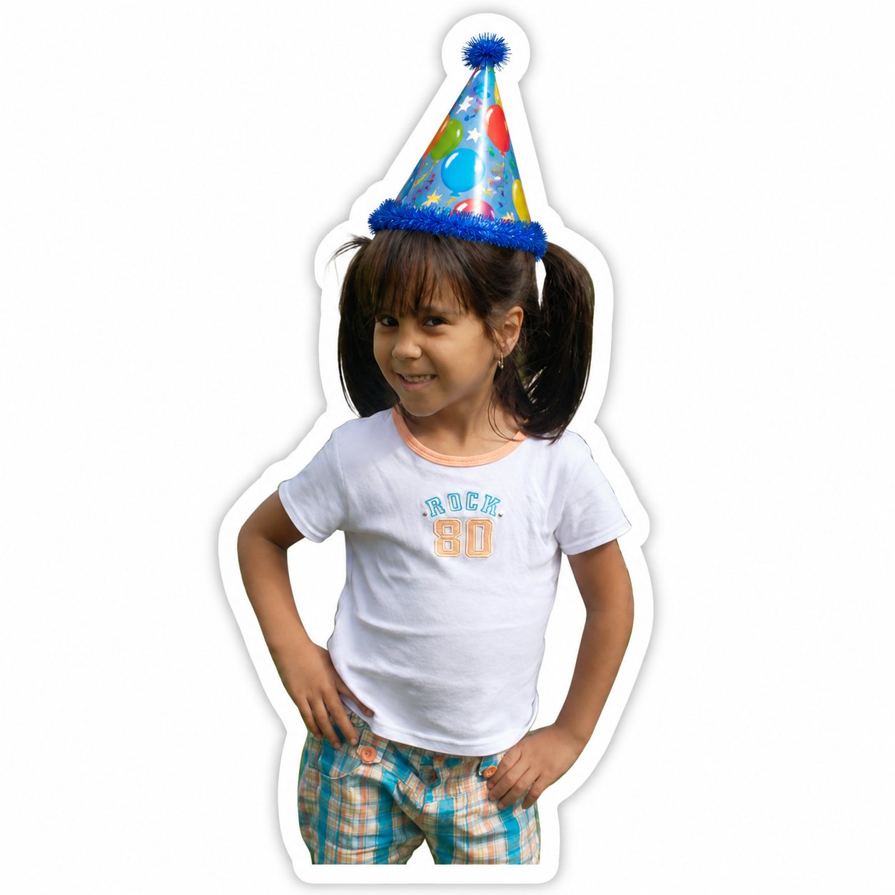
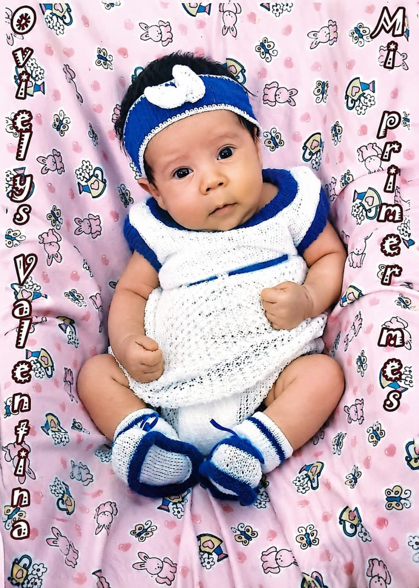
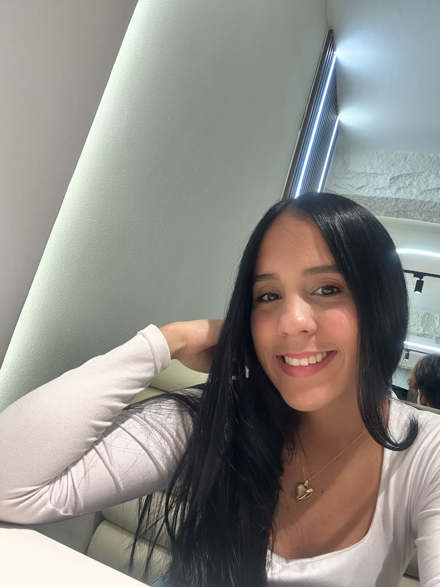
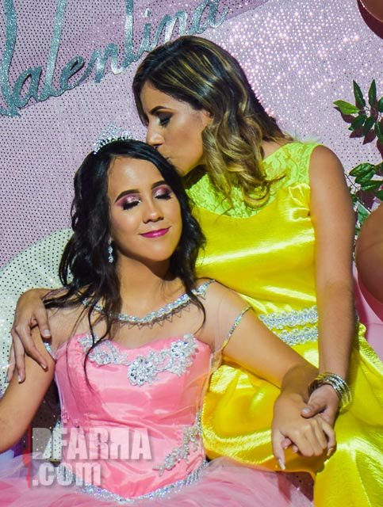
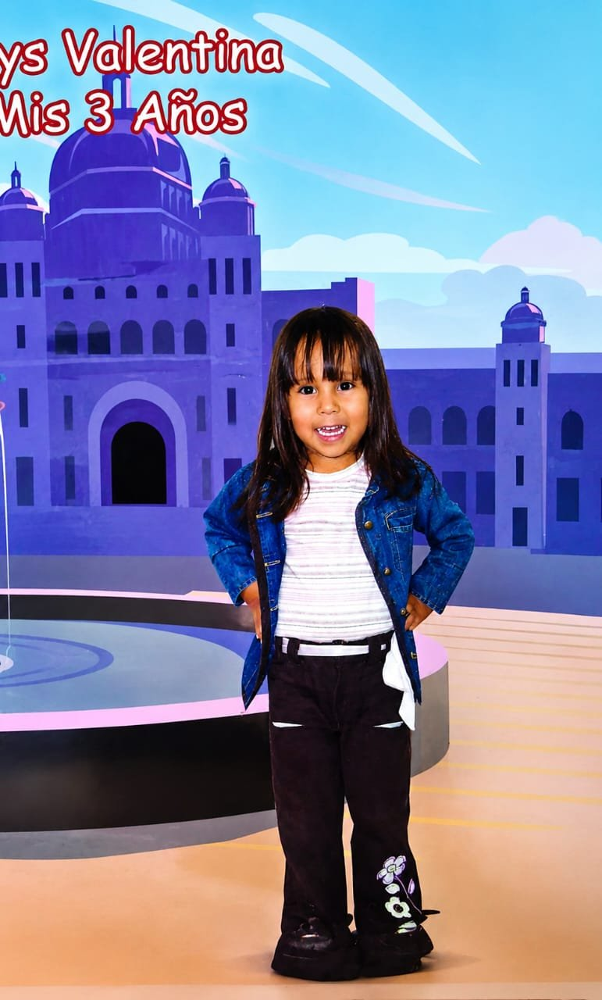
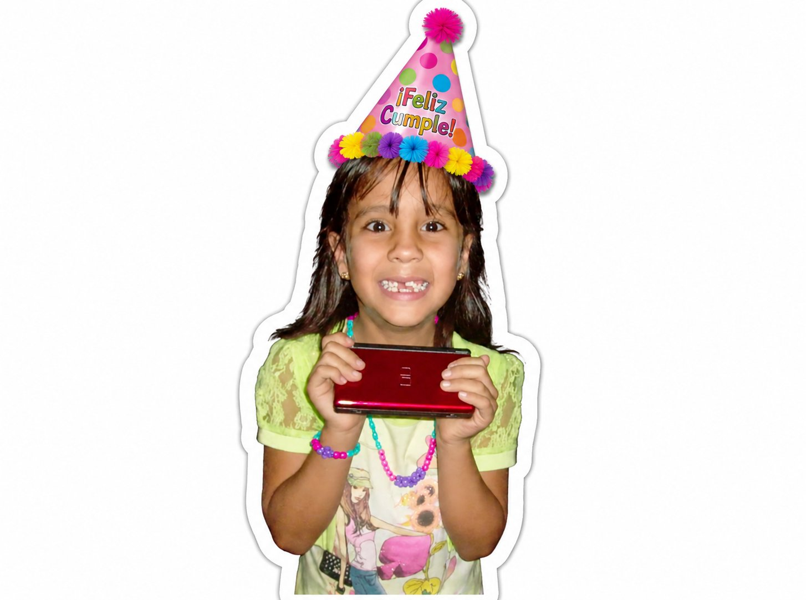
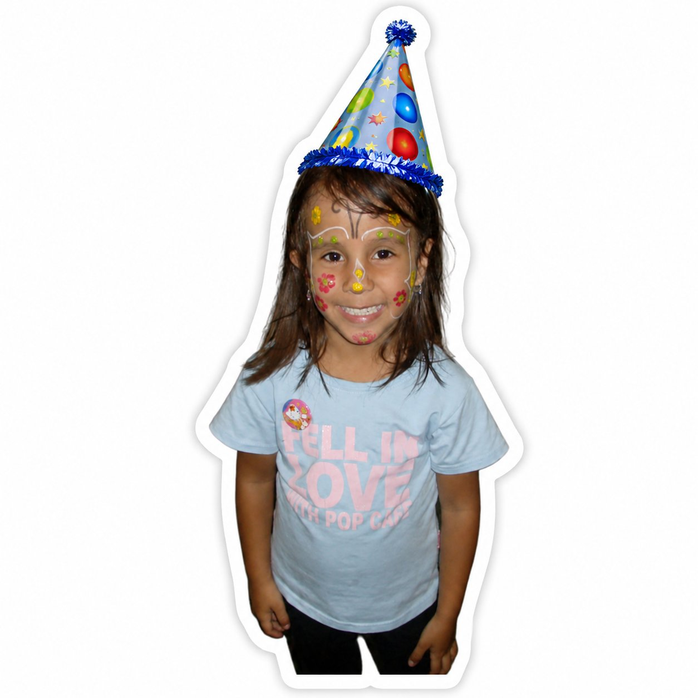

Capítulo VI
Los tesoros de la eternidad
✦
"Porque el amor también vive en esos detalles."





✦ Había una vez ✦
22 años de una historia escrita con amor
De mamá Gladys Rodríguez
para su hija Ovielys Valentina
Pulsa para despertar la historia
Capítulo I

"Llegaste a mi vida llenándolo todo, mi primera hija, mi más grande amor."
Hubo un día en que el mundo de mamá cambió para siempre. Llegó una pequeña princesa con los ojos más curiosos y las manos más pequeñas, y desde su primer llanto, todo tuvo un nuevo sentido. Así comenzó esta historia: con un amor tan grande que no cabía en el pecho.
Capítulo II

"Siempre hubo un lazo difícil de explicar."
Hay vínculos que no se pueden poner en palabras, solo se sienten. Entre Gladys y Ovielys siempre existió esa complicidad silenciosa: una mirada que lo dice todo, un abrazo que sana cualquier día gris, una certeza tranquila de que, sin importar la distancia o el tiempo, siempre estarán unidas por algo más fuerte que las palabras.
Capítulo III

"Ya cuidabas de mí con tu noble corazón."
Desde muy pequeña, Ovielys tuvo algo distinto: un corazón que se preocupaba por los demás antes que por sí misma. Era ella quien consolaba, quien notaba cuando alguien necesitaba una sonrisa, quien cuidaba con la ternura de quien ya sabe, sin que nadie le enseñe, que el amor también se demuestra cuidando a otros.
Capítulo IV

"Inteligente y fuerte, trabajadora sin parar, con sueños tan grandes que te llevan a volar."
Con el tiempo, esa niña curiosa se convirtió en una mujer de carácter firme y mente brillante. Estudió, trabajó, se cayó y se levantó las veces que fueron necesarias. Cada meta alcanzada fue un escalón más hacia los sueños que siempre se negó a soltar. Hoy, a sus 22 años, sigue construyendo, sin pausa y sin miedo, el futuro que ella misma diseñó.
Capítulo V
"Aquella vez que llegaste pidiendo un yogur para merendar."


Hay recuerdos pequeños que, sin saberlo, se vuelven enormes con los años. Esa tarde en que llegaste corriendo, con las mejillas sonrojadas, pidiendo solo un yogur para merendar, mamá lo guardó como un tesoro. No era el yogur lo que importaba: era esa sencillez, esa confianza ciega de saber que en casa siempre habría algo dulce esperándote.
— un yogur, mil recuerdos —
Capítulo VI
"Porque el amor también vive en esos detalles."




Capítulo VII
"Sigue creyendo en tus sueños."
Cada princesa de este cuento merece alas propias. Las tuyas están hechas de constancia, de valentía silenciosa y de un corazón que nunca dejó de creer. Hoy, a tus 22 años, el mundo entero es un cielo abierto esperando que sigas volando tan alto como tu corazón se lo permita.
✦ ✧ ✦
Ve ligera por la vida, sin miedo y con ilusión.
Que tus alas te lleven tan lejos como quiera tu corazón.
Con amor eterno, Mamá